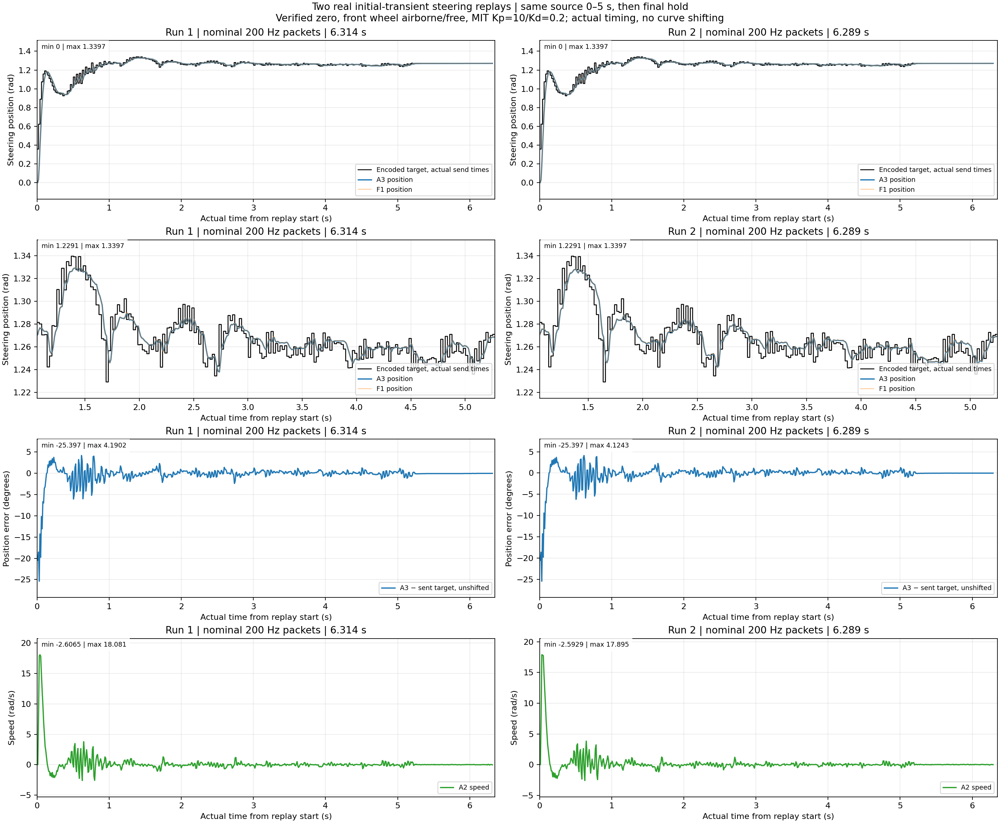
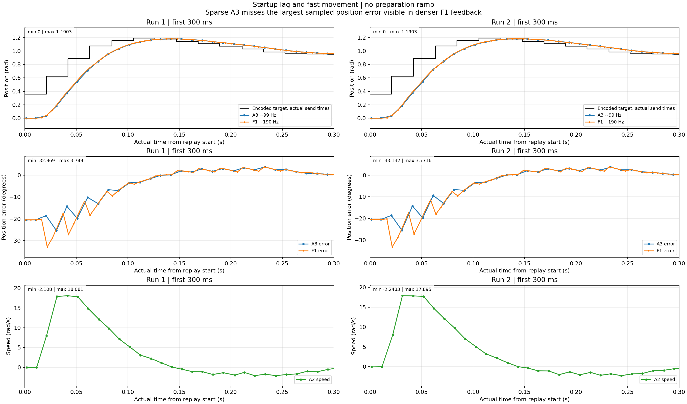
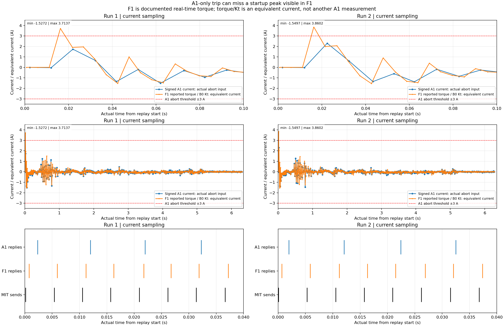
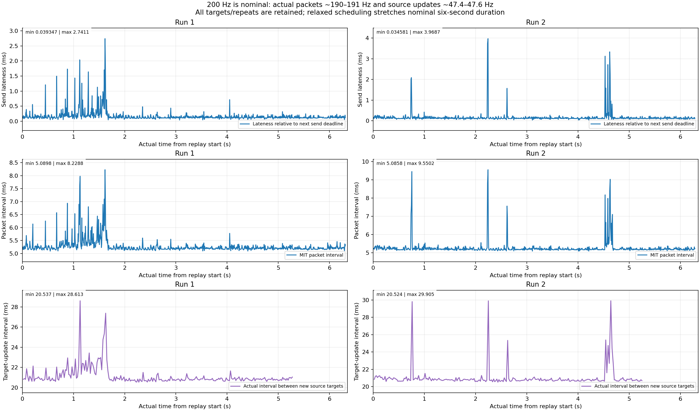
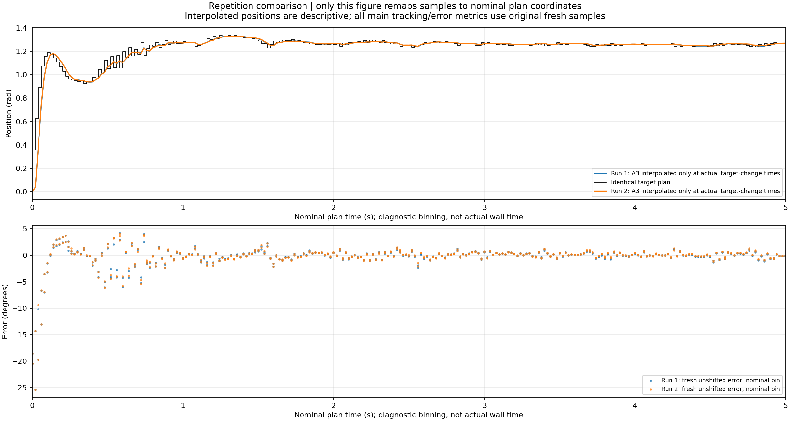

2026-10-27 · nominal 200 Hz · source 0–5 s + final hold · airborne/free steering.
Large brief startup error, then ~0.59° A3 RMS over source 1–5 s. F1 reveals a startup torque peak missed by the A1-only 3 A trip. Failed 50 Hz logs are unavailable.




